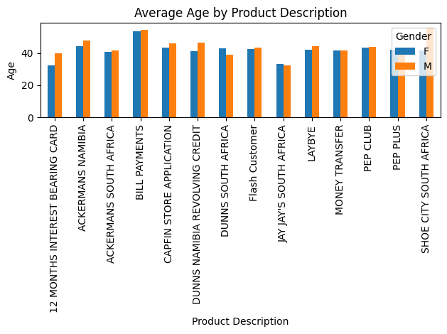
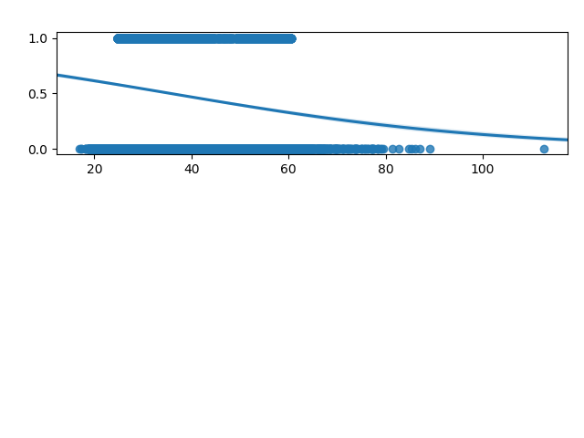
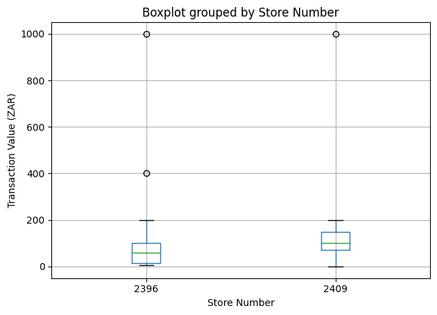
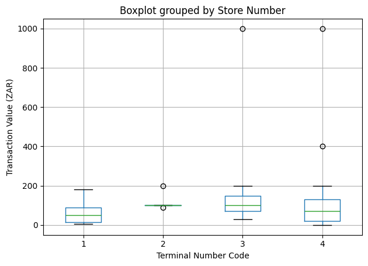

The registrations dataset contains customer details which was harvested when they registered for or activated a product or service within the Pepkor group. You need to do the following:
Analyse and show the following statistics:
Number of unique customers
Gender distribution
Average age of customers
Number of laybyes per subsidiary as percentage of overall number of laybyes (hint: sk_subsidiary_no <> prod_subsidiary_no)
Median age of ‘Competition 6’ customers
Add additional analyses based on the registration dataset that you picked up, including two graphs of your own choice and document two findings/insights from this dataset (Do not overthink it).
Start by importing the relevant libraries
from pathlib import Pathimport numpy as npimport pandas as pdimport matplotlib.pyplot as plt
/tmp/ipykernel_13517/427504256.py:3: DeprecationWarning:
Pyarrow will become a required dependency of pandas in the next major release of pandas (pandas 3.0),
(to allow more performant data types, such as the Arrow string type, and better interoperability with other libraries)
but was not found to be installed on your system.
If this would cause problems for you,
please provide us feedback at https://github.com/pandas-dev/pandas/issues/54466
import pandas as pd
Then load in the excel file and separate the sheets into separate DataFrames in Pandas
p = Path.home() /'pepkor-test'xls = pd.ExcelFile(p /'data'/'Assessment.xlsx')sheet_names = xls.sheet_namesdf_list = [pd.read_excel(xls, sheet_name=sheet) for sheet in sheet_names]registration, transactions, dim_cust_prod, dim_subsidiary = df_list
The number of unique customers is 9969
print(registration.SK_CUST_NO.nunique())
9969
The gender distribution is 80 percent women, 20 percent men.
Empty DataFrame
Columns: [SK_CUST_PROD_NO, SK_SOURCE_SUBSIDIARY_NO, SK_CUST_NO, CUST_REF_CODE, BIRTH_DATE, TAKE_UP_DATE, GENDER_IND, VALID_EMAIL_ADD_IND, CELL_PHONE, EMAIL_ADD, FIRST_NAME, HOME_PHONE, LAST_NAME, WORK_PHONE, HOME_ADD_LINE1, HOME_ADD_LINE2, HOME_ADD_LINE3, HOME_POST_CODE, WORK_ADD_LINE1, WORK_ADD_LINE2, WORK_ADD_LINE3, WORK_POST_CODE, POSTAL_ADD_LINE1, POSTAL_ADD_LINE2, POSTAL_ADD_LINE3, POSTAL_POST_CODE, CUST_PROD_DESC_x, Question, Answer, All work was done in Python. There is an accompanying Jupyter notebook to explain the code, Unnamed: 30, Unnamed: 31, AGE, CUST_PROD_NO, CUST_PROD_DESC_y, PROD_SUBSIDIARY_NO, PROD_GRP_NAME, MSISDN_PREFIX, COUNTRY_CODE]
Index: []
[0 rows x 39 columns]
One interesting finding is that the average age is highest for bill payments. We also note that the average of age of men for shoe city is 51; for women it is 36.
gender_group = registration.groupby(['CUST_PROD_DESC', 'GENDER_IND'])['AGE'].mean()gender_group.unstack().plot(kind='bar')plt.xlabel('Product Description')plt.ylabel('Age')plt.legend(title='Gender')plt.title('Average Age by Product Description')plt.tight_layout()plt.show()

A second finding is that, from a logistic regression, a one year increase in age is associated with at most a 0.02 percent decrease in having a valid email.

From the same regression output, a man is also at most 16 percent more likely to have a valid email than a woman. Here a woman is coded as 0 and a man as 1
The transactions dataset contains point of sale basket information for one of the Pepkor brands. You need to do the following:
Analyse and show the following statistics:
Number of unique customers that shopped
Average transaction (basket) value (hint: trn_no_code)
Average sk_store_no
How many stores per subsidiary in this dataset
If someone mentioned to you that the sales for this specific date were significantly lower than two days prior, what do you think could be possible reasons for it?
Add additional analyses based on the transactions dataset that you picked up, including two graphs of your own choice and document two findings/insights from this dataset (Do not overthink it).
There are 22 unique customers
print(transactions.SK_CUST_NO.nunique())
22
To find the average transaction value, I start by changing the negative transaction values to positive because this will affect the average.
If sales were lower on a day than the previous two days, it could be that sales are seasonal and that historically on this date, sales were lower.
The store hours could have been affected by public holiday and so sales could be lower.
It could also be because of changes in management at a particular store or subsidiary.
Another possibility is that the trend of sales is unstable to begin with.
One interesting finding is that the average transaction value of the store 2396 is 84.72 and for store 2409 it is 125.21. Store 2396 has a positive skew (75th percentile is R99.95); store 2409 has a slight negative skew (75th percentile is R149.95)
transactions.boxplot(column='BINC_TRN_AMT', by='SK_STORE_NO') plt.title('Boxplot grouped by Store Number')plt.suptitle('')plt.xlabel('Store Number')plt.ylabel('Transaction Value (ZAR)')plt.tight_layout()plt.show()

Another finding is that Terminal No 2 has the lowest number of transactions at 5. Terminal No 4 has the highest number of transactions at 42. Terminal 3 has the highest median transaction value at R99.95. Terminal 1 has a positive skew with the 75 percentile at R89
transactions.boxplot(column='BINC_TRN_AMT', by='TERMINAL_NO_CODE')plt.title('Boxplot grouped by Store Number')plt.suptitle('')plt.xlabel('Terminal Number Code')plt.ylabel('Transaction Value (ZAR)')plt.tight_layout()plt.show()

I would have liked to explore the relationship between age and transaction value, but a merge with the registrations table on SK_CUST_NO turned up empty.